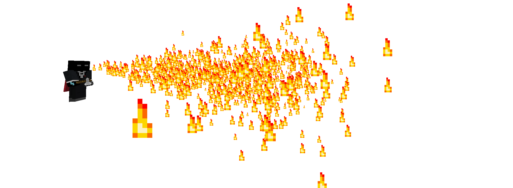

A minigame developed to learn how to develope a minigame
WARNING! This plugin is under heavy development so some features listed on this site may not be already ingame or bugged!
Gameplay

Ferdi van Ferdison using an item (flamethrower)
The main mechanic of this PVP gamemode are the items, which are introduced to the
game with the plugin.
The game is roundbased and you can choose (vote) for one gamemode. Currently there
are just two gamemodes (normal and hardcore) but maybe some other will follow!
Click here to see all informations about the gameplay!
Addons
There are some precoded items in the plugin but to get more of them you can code your
own new items with the help of the API or you can browse for some addons with the ingame
"addon-browser", which are already coded by me or someone else.
Click here to see all informations about the addons!
Features and TODO
Click here to see the features and TODO-list!